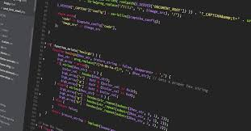

<html lang="en"></html>
<head>
    <meta charset="UTF-8">
    <meta name="viewport" content="width=device-width, initial-scale=1.0">
    <title>TUGAS 2 WEB</title>
</head>
    <style>
        body{
        background-color: aqua;
        }
       
        h1 {
            color:  rgb(221, 218, 19);
            display: block;
            
        }
        p {
            color: rgb(221, 218, 19);
        }

        .ruang-1 {
            float: left;
            background-color: rgba(11, 31, 129, 0.644);
            margin: auto;
            margin-right: 50px;
			margin-left: 100px;
            padding: 20px;
            width: 400px;
            height: 300px;
           
        }

        .ruang-2 {
            float: right;
            background-color: rgba(11, 31, 129, 0.644);
            margin: auto;
            margin-right: 100px;
			margin-left: 20px;
            padding: 20px;
            width: 400px;
            height: 300px;
        
        }
        span{
            color :rgba(11, 31, 129, 0.644);
        }
        .img1{
            float:right;
            margin-right: 100px;
        }
        .img2 {
            float: left;
            margin-right: 20px;
        }
        footer {
            text-align: center;
            clear: both;
            padding-top: 50px;
            padding-right: 20px;
            color:rgba(11, 31, 129, 0.644);
            font-size: 20px;
            
        }
        header {
            font-size: xx-large;
            margin: 80px;
            text-align: center;

        }
        

    </style>
<body>
    
    <header><h1>Apa itu<br><span>Pemprograman Berorientasi Objek</span> dan <span>Pemrograman Web? </span> </h1></header>
        <div class="ruang-1">
        
            <p><b>Pemprograman Berorientasi objek</b></p>
            <p>Object-Oriented Programming (OOP) adalah metode programming yang berorientasi kepada objek. 
                Dalam OOP, terdapat kelas dan objek  yang berinteraksi satu sama lain sehingga dapat tercipta suatu program. 
                OOP memudahkan untuk mengatur dan menggunakan kembali suatu kode sehingga dapat menghemat waktu dan mengurangi kesalahan.</p> 
            
        </div>
  
        <div class ="ruang-2">
            
            <p><b>Pemograman Web</b></p>
            <p>Pemrograman web adalah proses membuat dan mengembangkan situs web atau aplikasi web dengan menggunakan bahasa pemrograman. Pemrograman web merupakan cabang dari ilmu pemrograman komputer yang menerapkan konsep pemrograman di dunia web.</p>
        </div>
    
    <footer> Pemprograman Web </footer>

</body>
</html>